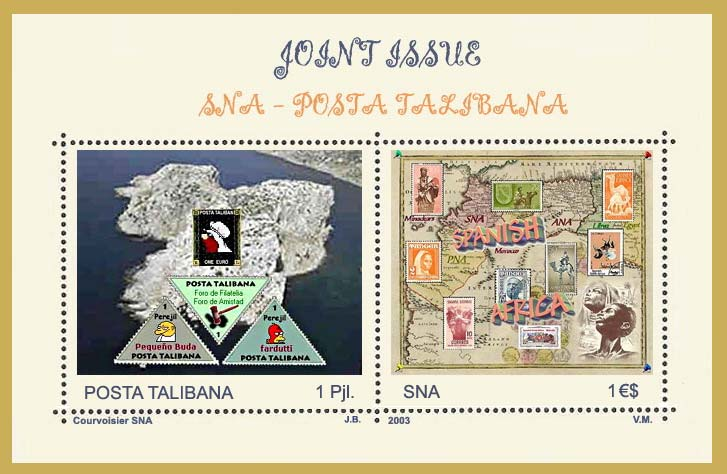
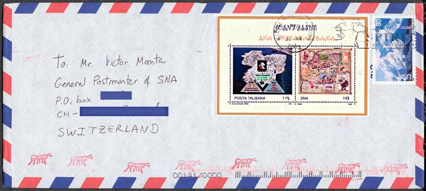

|
Created:
06/13/03. Revised:
01/07/06. |
|
|
WITH THE TALIBAN POST We have got recently an e-mail from Mr. Jaume Balsells, a collector of Spanish stamps and a webmaster. It is very interesting to find out again and again how the same causes provoke the same effects. Here is what he wrote:
"It is curious how we, collectors, have
found similar ways to express our disagreement with the current
stamp-issuing policies of some countries. In our case (the users of the
Spanish philatelic chat board), it all started as a protest against the
modern issues of Spain; ugly designs, high face values, and stamps not
distributed to post offices, actually, pretty much non-existent outside the
philatelic community. Now that you know all the story, and since SNA and POSTA TALIBANA have so much in common, I think it would be a good idea to prepare a joint issue between the two countries. Let me know what you think about it and if you have any ideas about a good subject for a joint issue."  Consequently, we have made a concrete proposal to Jaume, and we have invited him to improve the design of the first version of the above miniature sheet . The sheet is the result of the common work of the SNA and the TALIBAN POST designers, and it shows the entry pages of the Taliban Post site and of the present one. The miniature sheet was launched simultaneously on the 19th of June 2003 by the POSTA TALIBANA and by the SNAPO. It was printed at the Courvoisier SNA Security Printing Office, at Ciudad de Leon. The print run was of 10,000 pieces only. The miniature sheet can be found at any serious philatelic shops. Finally, just to notice that there is no relationship between the POSTA TALIBANA and the Afghan Taliban. Please take a look also at the miniature sheet that was sent on cover, and that was regularly cancelled by the US Post, a postal authority that recognizes both the SNAPO and the Posta Talibana.  Links:
Emisi·n conjunta de Posta Talibana y SNA (·frica del Norte Espa·ola) No deja de ser curioso
como, aun sin conocernos, los coleccionistas filat·licos hemos encontrado
formas similares de expresar nuestra disconformidad con las pol·ticas
emisoras de algunos pa·ses. En nuestro caso (los usuarios del ·gora de
filatelia), todo empez· como una protesta contra las emisiones modernas de
Correos de Espa·a; dise·os horrendos, valores faciales elevados y escasa
distribuci·n de los sellos a las oficinas de Correos. M·s concretamente, los
sellos en Espa·a son pr·cticamente inexistentes fuera de la comunidad
filat·lica.
|
|
Created:
06/13/03. Revised:
01/07/06. |
|